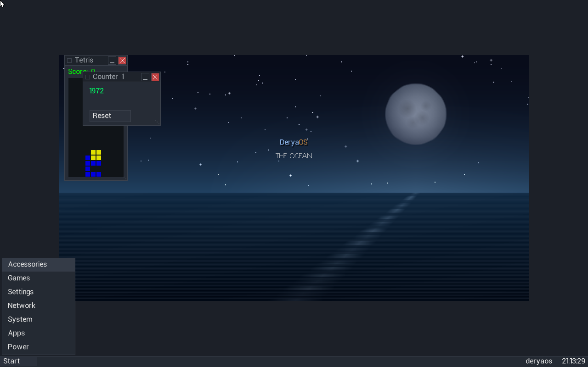

What it is
DeryaOS is written from the ground up: the boot chain, the kernels, the drivers, the GUI, the network protocols and the filesystems are all original code. One unified codebase already runs on both 32-bit and 64-bit x86 from the same source — the foundation for bringing DeryaOS to any architecture.
Why DeryaOS
Most devices run a borrowed kernel wrapped in layers nobody fully controls. DeryaOS takes the opposite path: one coherent system, owned end to end, with no hidden parts underneath. That control is what lets a single operating system be lean enough for a tiny sensor yet dependable enough for a factory line or a server — predictable, auditable and built to last. The long-term goal is a platform you can trust as the foundation for real-time and industrial control, where timing and reliability are not optional. And because every layer is ours, there are no foreign or hidden dependencies to trust — so the whole stack stays inspectable, secure and supportable for the long haul.
Highlights
Native desktop
A real windowed GUI — draggable, resizable windows, a taskbar and start menu, with built-in apps: a text editor, file manager, web viewer, system tools and a few games.
Built to be portable
One unified codebase, today on 32-bit and 64-bit x86 with preemptive multitasking — designed to extend to any architecture.
Networking
An original TCP/IP stack — ARP, IPv4, ICMP, UDP, TCP, DNS and HTTP — driving real network cards.
Filesystems
Read/write FAT16, FAT32, exFAT and the native DeryaFS; read support for NTFS and ISO 9660.
Over-the-air updates
The system updates itself in the background and verifies every component cryptographically before applying it, with automatic rollback if a new build misbehaves.
Its own installer
Boots from USB or CD, partitions a disk, and installs — boot manager included.
Built to run everywhere
DeryaOS is designed to scale from the smallest devices to the data center — one system, one codebase, many forms. The goal is simple: to be everywhere.
Embedded & IoT
Lean and self-contained enough for tiny embedded boards and connected IoT devices.
Mobile devices
The same touch-ready desktop and graphics stack, headed for phones, tablets and handheld devices.
Industrial & real-time
Built toward deterministic, real-time operation — guaranteed timing and task priority for machine, process and panel control on industrial PCs.
Desktop & office
A native windowed desktop for everyday office and productivity machines.
Corporate servers
Networking, filesystems and cryptographically verified updates built in — groundwork for dependable back-end and server roles.
Download
Try DeryaOS for x86 (32/64-bit). It's early beta software — don't run it on a machine whose data you can't afford to lose.
New to this? Read the step-by-step Install & setup guide →
Ready VM — VMware / VirtualBox
A preinstalled appliance. In VMware or VirtualBox choose File → Import (Open Appliance), pick the .ova, and boot straight to the DeryaOS desktop.
deryaos-x86.ovaReady VM — QEMU
Unzip, install QEMU, run the launcher — a DeryaOS desktop boots in a window.
deryaos-x86-vm.zipInstaller image (USB)
Gunzip and write to a USB stick (Rufus / dd), then boot to install on real hardware.
deryaos-x86.img.gzSeed CD & diskette
Small bootable media that installs the full system. ISO for a CD or a VM, plus a classic 1.44 MB boot diskette.
seed.isoMore architectures and images are on the way. All releases →
Beta program
DeryaOS is being tested on real hardware and in virtual machines. We are looking for a small group of beta testers who can run it, push it, and report what they find — what works, what breaks, what feels wrong. Findings are reviewed together and turned into fixes.
It is early software: expect rough edges, and don't run it on a machine whose data you can't afford to lose. If that sounds like your kind of fun, get in touch.